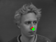
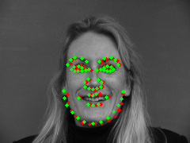

Part 1
Dataloader samples
The dataloader downscales images to 80x60 and into grayscale.
{kind=link}
Train and validation loss for nosenet
| train profile nose_p1 | train profile nose_p2 | train profile nose_p3 |
{kind=link}
{kind=link}
{kind=link}
Show how hyperparameters affect results
Note that the nose and face models output direct pixels, which is why loss may seem high.The training profiles (nose_p1, nose_p2, nose_3) listed above are as follows:
- nose_p1 is the baseline model. It uses 3 convolutional layers with 5x5 kernels with channels 32, 24, and 12. Each convolutional layer is followed by a maxpool. There are two fully connected layers. Each non-last layer is followed by a relu. The model is trained on 25 epochs with a learning rate of 1e-3 with Adam and MSE loss. nose_p1 has a validation loss of about 16.0.
- nose_p2 is identical to nose_p1 with a learning rate of 1e-2. This reduces validation loss by a factor of 4 (about 4.0).
- nose_p3 is identical to nose_p1 with 3x3 kernels instead of 5x5s. This reduces validation by about 50% (about 10.5).
Show two success/failure cases
Given that nose_p2 was the highest performing profile, we use it for our results. Red dots are predicted while green dots are actual. You can see all results here.
|  | |
| success on valid1 | success on valid5 |
| failure on valid11 | failure on valid12 |
{kind=link}
{kind=link}
{kind=link}
{kind=link}
The reason for failure on the images we were given likely has to do with both the rather small downsampling of the images and the likely aliasing of higher frequency features that may result. What looks like a nose to a convnet at 80x60 is not actually a nose.
Of course, with neural networks, there's often no way to know for certain. (Why did the ML system fail? I don't know.)
Part 2
Dataloader samples
The dataloader downscales images to 240x180 and into grayscale. To apply augmentation, we rotate the images by up to 30 degrees and do some np.roll shifting. This was pure pain to get the keypoints to follow.
{kind=link}
Report detailed architecture
The model had 5 conv2d layers and four fully connected layers. Each conv layer had a relu into maxpool and each FC layer had a relu. The LR was 1e-3, trained across 100 epochs, and using Adam and MSE.- conv1: 1 input channel, 96 output channels, 3x3 kernel
- conv2: 96 input channels, 96 output channels, 3x3 kernel
- conv3: 96 input channels, 64 output channels, 3x3 kernel
- conv4: 64 input channels, 32 output channels, 3x3 kernel
- conv5: 32 input channels, 24 output channels, 3x3 kernel
- fc1: 360 input channel, 240 output channels
- fc2: 240 input channel, 240 output channels
- fc3: 240 input channel, 240 output channels
- fcL: 240 input channel, 116 output channels
Plot train and validation loss
 |
Show two success/failure cases
Red dots are predicted while green dots are actual. You can see all results here.
|  | |
| success on valid15 | success on valid18 |
| failure on valid38 | failure on valid34 |
{kind=link}
{kind=link}
{kind=link}
{kind=link}
If I had to guess, for out34, the eyebrows were too eye-like for the convnet so it read that as eyes and shifted the whole face up. For out38, the model seemed to think the shadow underneath the mouth was a jawline. It seems to struggle with jawlines overall.
Visualize learned features
The 3x3 patches have been tiled into the images seen here into a (channels_out x channels_in) grid, so the 3x3 patch conv[n_i, n_o, :, :] lives at the pixels surrounding (x=3*n_i + 1, y=3*n_o + 1)| Conv1 (96x1). Note that it's been flattened on its side. |
| Conv2 (96x96). |
 |
| Conv3 (64x96). |
| Conv4 (32x64). |
| Conv5 (24x32). |
{kind=link}
{kind=link}
{kind=link}
{kind=link}
Part 3
Dataloader samples
The dataloader reshapes the bounding boxes to 224x224 and into grayscale. To apply augmentation, we randomly enlargen the bounding boxes by up to 20% in each direction. Bounding boxes are also rectified to always contain keypoints before augmentation is applied. Negative bouding box coordinates are filled in with zeros.
{kind=link}
Submit a working model to Kaggle competition
This project submission uses the name "Guinea Wheek." The average mean absolute error is around 10.Report detailed architecture
The model was ResNet18 modified to use on its lowest conv layer 1 input channel on a 7x7 kernel with stride 2x2 and padding 3x3. The output fully connected layer was modified to have 512 input channels to 68*2=136 output channels. The LR was 1e-4, with Adam optimizer and MSE, trained across 25 epochs. 95% of the input dataset is used as training data.Plot train and validation loss
{kind=link}
Visualize results on test set
{kind=link}
{kind=link}
{kind=link}
{kind=link}
Run on at least 3 of your own photos
{kind=link}
{kind=link}
{kind=link}
yare yare daze.